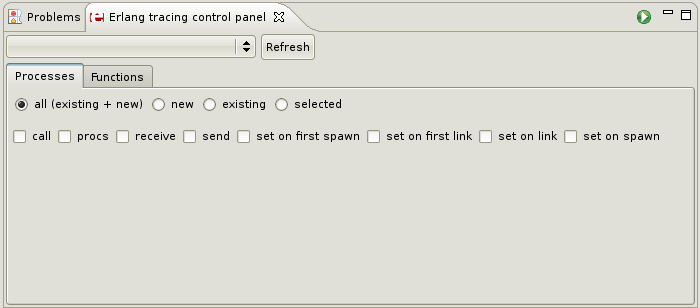
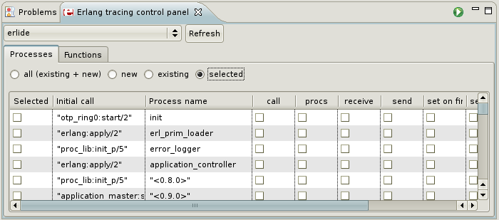

Processes tab
In this tab you can choose which processes and what events you want to trace.

Processes panel
Types of processes
You can select one of the following:
- all (existing+new) - all processes will be traced
- new - no currently existing processes are affected; only processes created after
starting tracing will be traced
- existing - only currently existing processes will be traced; new processes will not
be affected
- selected - only processes selected from list will
be traced (see Setting individual process flags)
Process flags
You can select one of the following:
- call - tracing global function calls (and local if local is set in trace pattern) according to the active trace patterns
- procs - tracing process related events to the process (e.g. spawn, exist, link)
- receive - tracing received messages
- send - tracing sent messages
- set on spawn - all processes created by the traced process inherit the trace flags
of the traced process
- set on first spawn - same as set on spawn, but only for the first process
spawned by the traced process
- set on link - another process (P2) inherit the trace flags of the traced process
whenever the traced process links to P2
- set on first link - same as set on link, but only for the first process
spawned by the traced process
If you do not want to set global process flags or you just want to trace only selected processes you
can check
selected
as type of processes for tracing. A list of all processes running on selected nodes will be
displayed. On this list you can select which processes you want to trace and set flags for each
processes.

Setting individual process flags